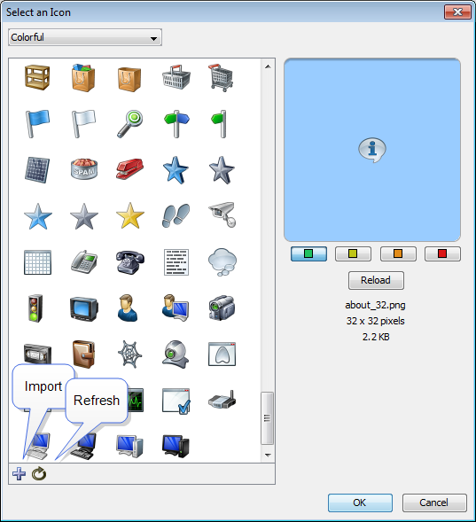

Icons and Images on Maps
InterMapper can display devices on a map in one of several shapes.
The default shape is a rectangle, with the device's Label inside. InterMapper
can also display an oval, a wire (a straight line), a cloud, a text object
which can be used as a legend on a map, or as an icon.
A large number of built-in icons are provided with InterMapper. It is also
very straightforward to import your own icons.
Setting an Object's Icon
To set an icon, select one or more items on the map, then choose Format
> Icon... This opens the Select an Icon window. This window
has several components:

Select an Icon window - Built-in Shapes
- A drop-down menu lists collections of icons called
Icon Sets. There are several built-in icon sets, including Traditional
and Default icons sets, and various Cisco-themed icon sets..
- A scrolling list on the left shows icons from the
selected icon set. These icons appear at a uniform size in the list.
Click one of these icons to use it for the selected device(s) on the
map.
Note: Grayscale custom icons appear shaded with the color of
a device when it is in the UP state (the default is green.)
- A preview pane of the icon, showing the selected icon
in the size it will appear on the map.
- Color preview buttons. The green, yellow, orange,
and red buttons correspond to the different device states. Click a
colored button to view the icon's appearance when it is in the indicated state.

Select an Icon window - Default Icons
- Below the Reload button is Information
about the icon: its filename, dimensions, and file size.
- Click the Refresh button (as shown) to force InterMapper
to reload the image, perhaps after modification in an image editing
program.
- Click the Import button (as shown) to import an
icon or a folder of icons into InterMapper. These icons are sent to
the InterMapper Settings > Custom Icons folder on the InterMapper
server.
- Click the Refresh button to refresh the list of icons.
- Drag an image file to the window to import it into the current icon-set.
-
Drag a folder of image files to the window to create a new icon-set,
importing the image files in the folder to the new icon-set.
-
If the Icon Size slider appears, use it to select the icon's size.
Icon Coloring According to the Device Status

InterMapper colors the icon depending on its status. When in the Up
status, the icon retains its normal color. (Grayscale icons are tinted green.) If the icon goes to a warning,
alarm, or down status (yellow, orange, or red, respectively) InterMapper shows a grayscale version, tinted to match the device's state.
Clicking the color preview buttons changes the color to show how the
icon appears on the map in a given status.
Creating Custom Icon Files
Icons files can be saved in one of several common graphic formats:
-
Portable Network Graphics (PNG) - recommended - works with all operating
systems and platforms.
-
Joint Photographic Experts Group (JPEG) - works with all operating systems
and platforms.
-
Graphic Interchange Format (GIF) - works with all operating systems
and platforms.
Other graphics file formats may work for you, but aren't guaranteed to appear
properly on all platforms.
The recommended file format is a PNG file, saved at 72 pixels per inch,
with 256 colors. You should use transparency for the area surrounding
the icon, so the background color shows through properly.
If the icon's filename has a suffix of "_##" where "##"
is a number representing the size in pixels, the icons are grouped automatically,
and the icon size slider appears.
Placing arbitrary icons and images in maps
Any icon or image can be placed in a map. Before you can place an image in a map, you must import it as an icon.
To place an image or icon in a map:
- If the image has not yet been imported as an icon, import it now.
- From the Insert menu, choose Icon... The Select an Icon window appears.
- Choose the icon or image you want to insert and click OK. The icon or image appears in the map.
- Move the icon or image to a desired location on the map.
Note: When you place an icon on a map, a network oval is added to the map, and the icon assigned to it. You can edit the network as you would any other network, changing the icon or label, or adding a comment or subnet list.